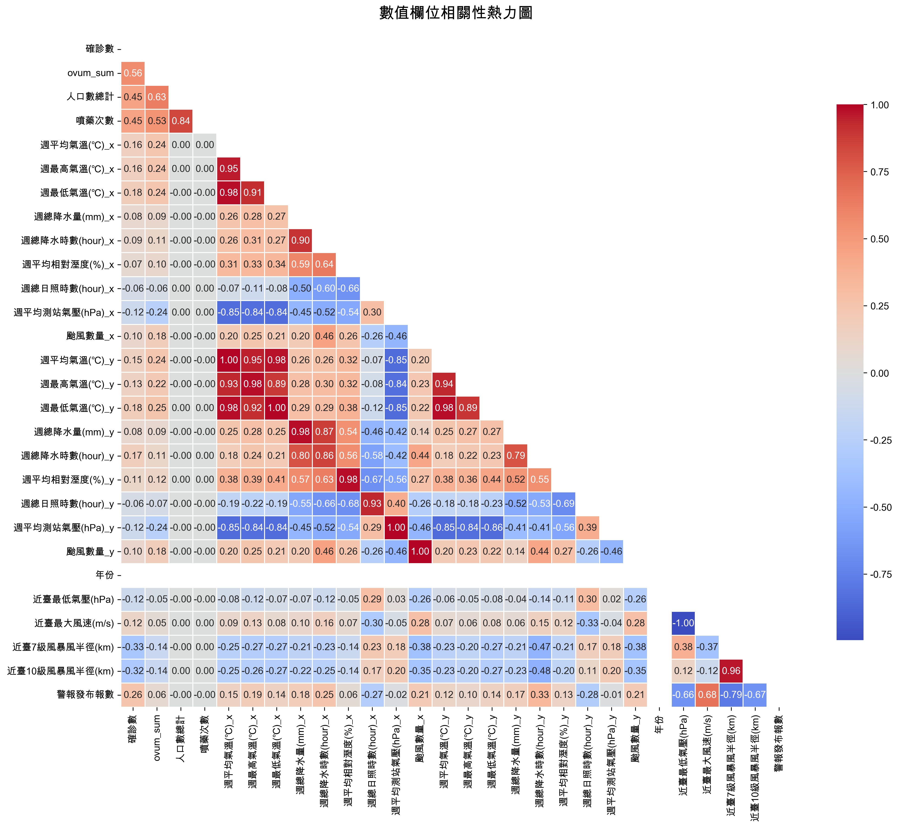
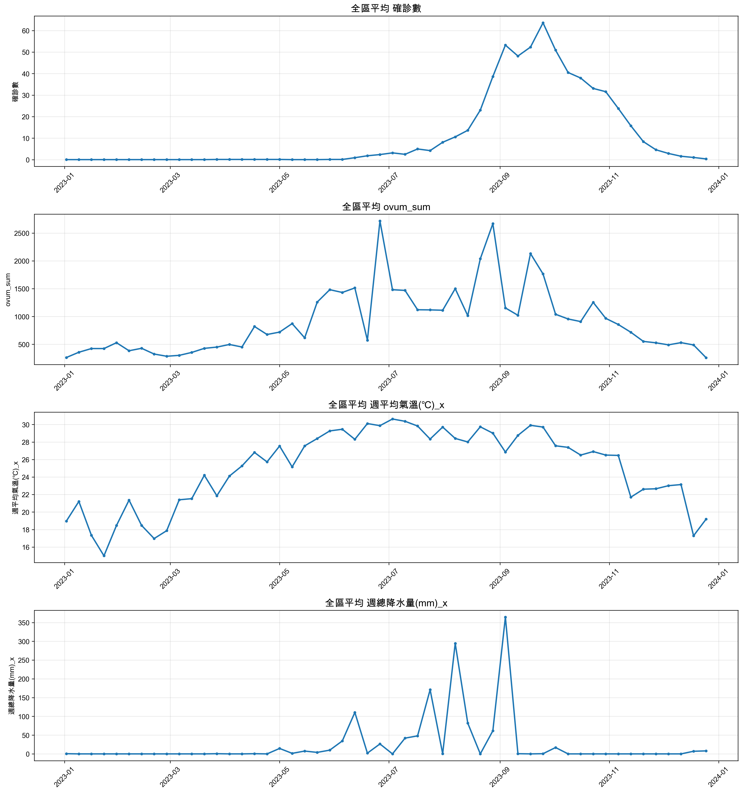
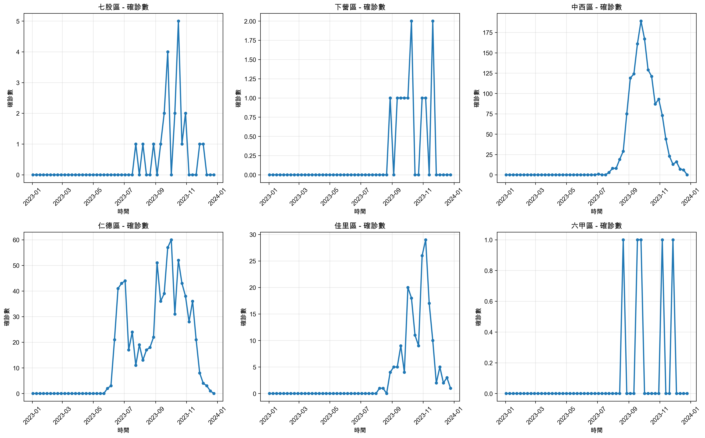
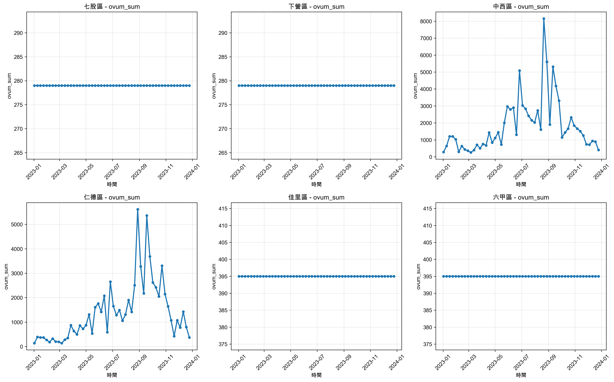
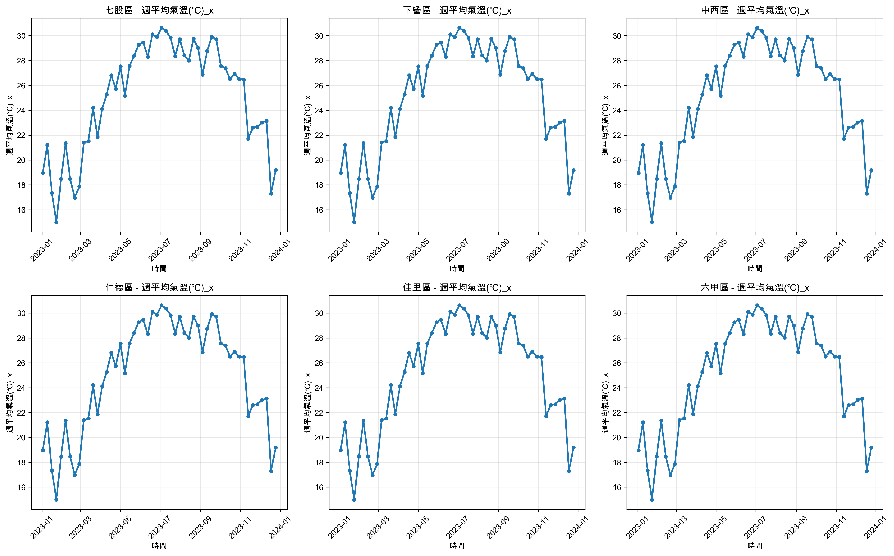
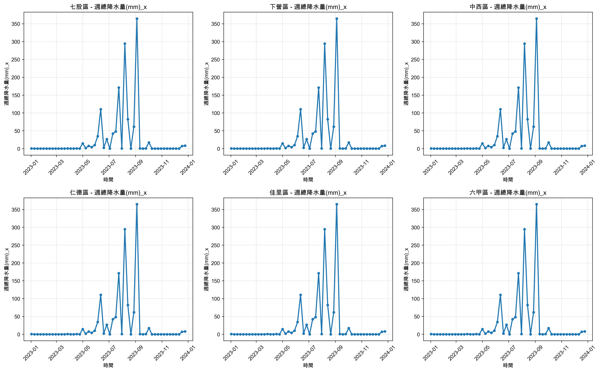
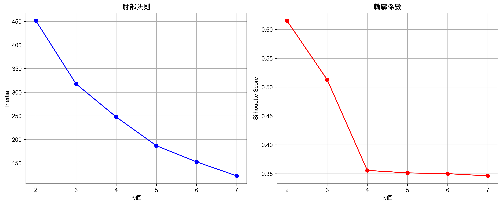
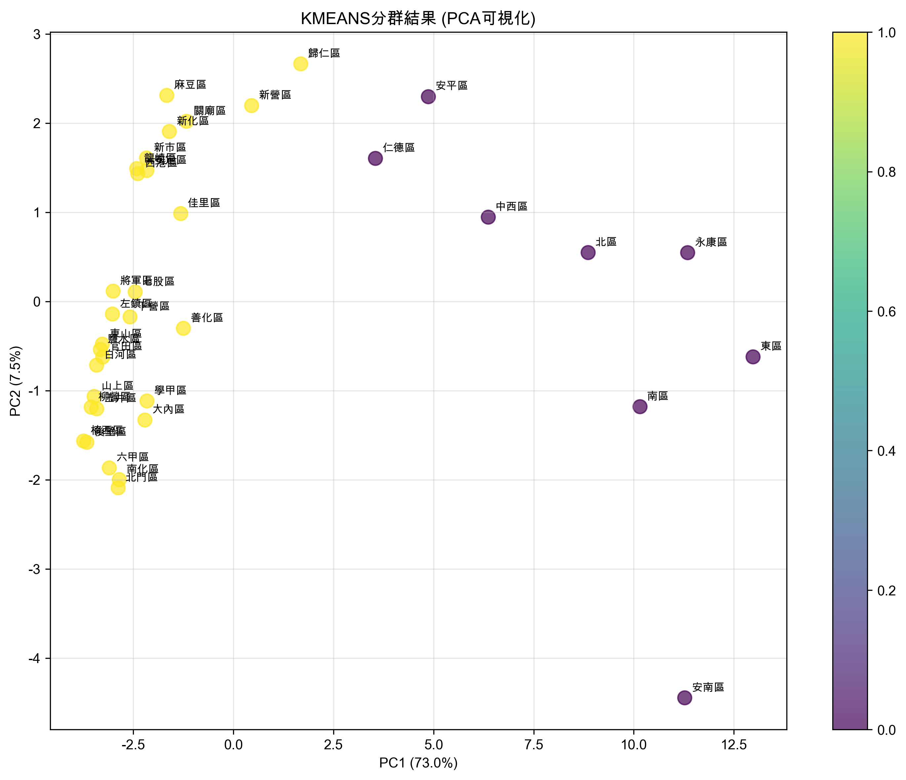
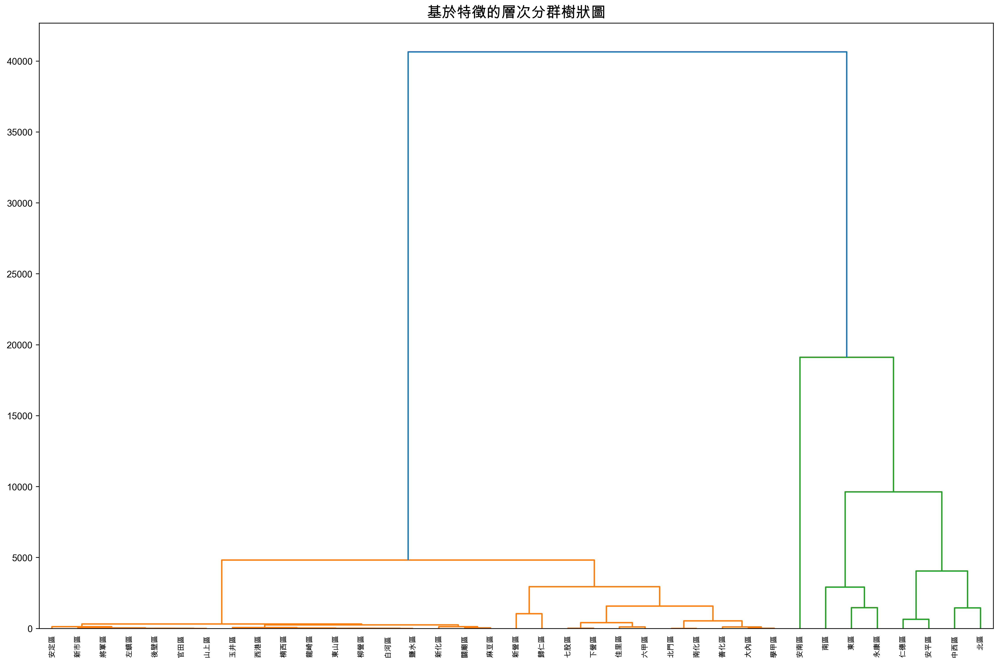

台南市2023年登革熱數據時序分析與分群研究
本分析對台南市2023年登革熱數據進行了全面的時序分析，包含37個行政區的週度數據，涵蓋確診數、誘卵桶數量、人口數、噴藥次數、氣象數據（兩個測站）和颱風相關資訊。
分析採用多種時序分析方法，包括特徵提取、相關性分析、KMeans分群和層次分群，為登革熱防控提供科學依據。
| 項目 | 數值 | 說明 |
|---|---|---|
| 數據規模 | 1,961行 × 38列 | 涵蓋37個行政區的週度數據 |
| 時間範圍 | 2023年1月-12月 | 完整的年度週度數據 |
| 行政區數量 | 37個 | 台南市所有行政區 |
| 主要變數 | 8個核心指標 | 確診數、誘卵桶、人口、噴藥、氣象等 |

這些發現顯示人口密度、防控措施強度和病媒監測數據與登革熱確診數有顯著關聯。
發現多組高相關性變數對，主要包括：








群組0 (核心區域):
中西區、仁德區、北區、南區、安南區、安平區、東區、永康區
群組1 (外圍區域):
其他29個行政區
群組0 (外圍行政區):
29個外圍行政區（七股區、下營區、佳里區等）
群組1 (核心行政區):
7個核心行政區（中西區、仁德區、北區、南區、安平區、東區、永康區）
群組2 (特殊區域):
安南區（單獨成群）
為每個行政區提取了99個時序特徵，包括：